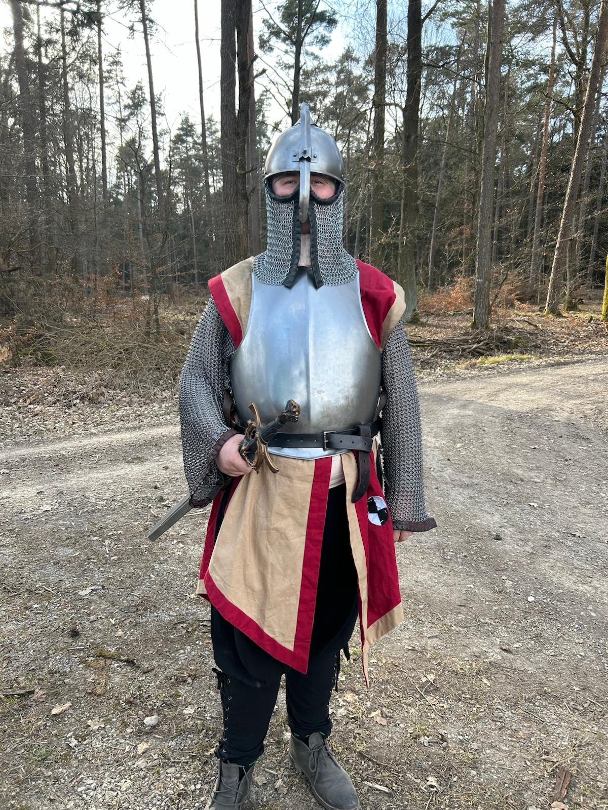
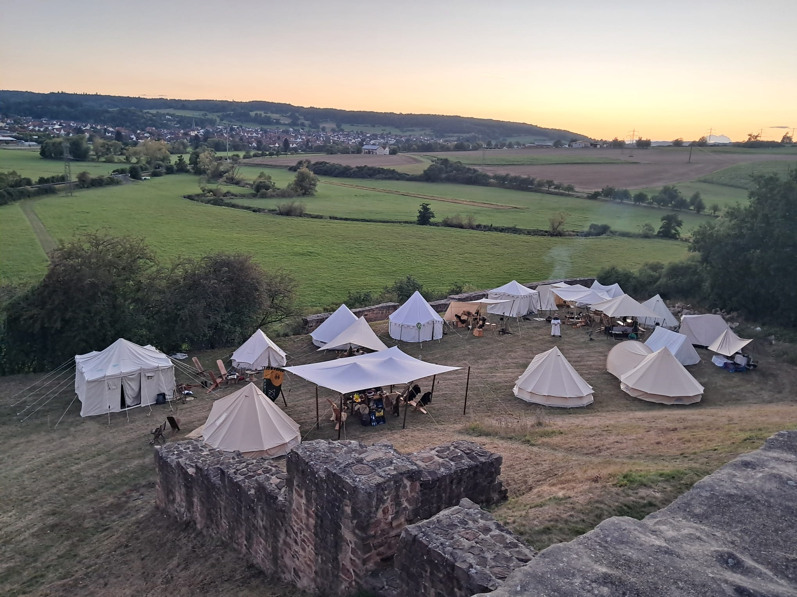
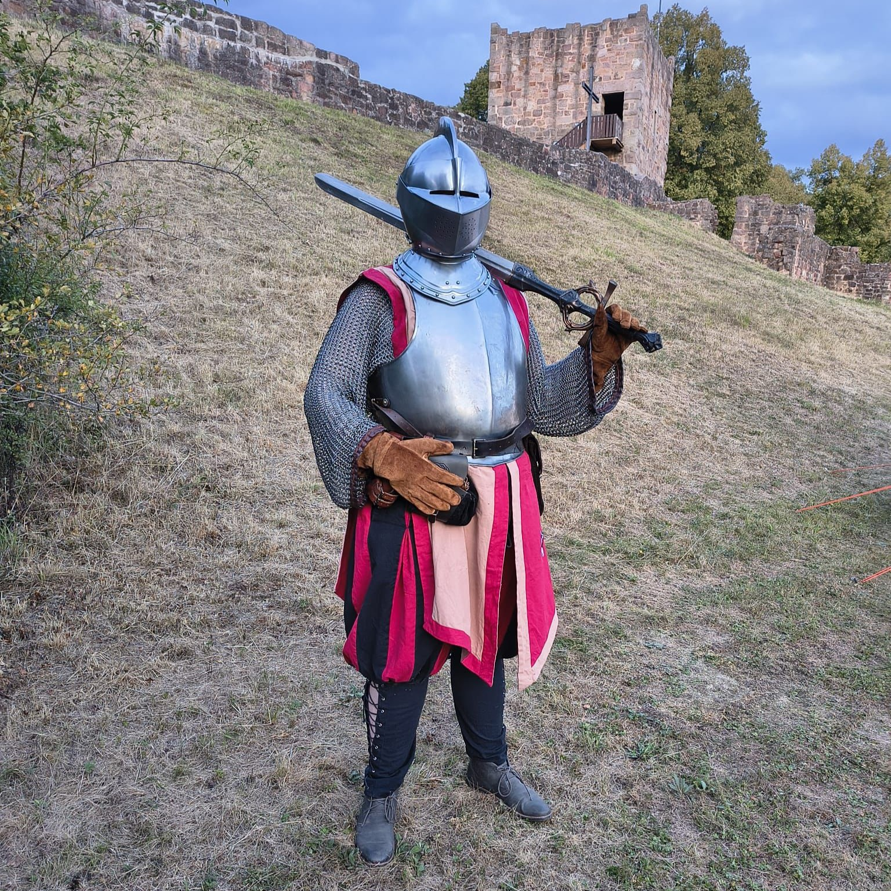
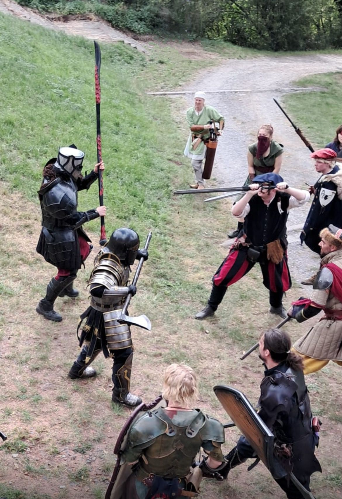

Wolfgang, der Heimatlose

Die Con's
Korruption des Geistes, (Laufi LARP 2025)
Geschickt von einem Vogt sollten Shania und Wolfgang einem Mysteriösen Phänomän im Wald auf die Spur gehen. Im Wald trafen sie dann auf die Reisegruppe um Dahlia, Torsten, Hagen und Ganjael, welcher sie sich anschlossen, um dem Verschwinden von Dorfbewohnern im Wald auf die Spur zu gehen.
Auf diesem Weg kam es immer wieder vor, dass mitglieder der Gruppe sich gegenseitig angegriffen haben. Nach intensiver Forschung konnte die Gruppe herausfinden, dass diese wiederkehrende Korruption durch ein Magisches Artefakt im Wald hervorgerufen wird und durch die Zerstörung dieses Artefakts konnte der Fluch gebrochen werden.

Söldnergilde Waldsolms, August 2025
Pre-Con-Telling:
Nach der Gefangennahme des Inakischen Bundes durch Graf Erich von Steinbach wegen dem Vorwurf
von Frevlerei wurde es Shania, Dahlia, Torsten und Wolfgang gestattet einen Beweis für das
Reisen in andere Welten zu erbringen. Sie reisten daraufhin durch einen Weltenriss ins
Königreich Waldsolms der Mittellande, wo sie sich der Reisegruppe der Söldnergilde Waldsolms
anschlossen.
Con:
Nach zwei Tagesmärschen mit der Söldnergilde erreichten sie eine Burg im Niemandsland, auf der
sich
eine Vampirin mit ihrem Gefolge verschanzt hat. Schon bei der ersten Ankunft auf der Burg wurden
die
Söldner von Untoten Dienern der Vampirin angegriffen, sogenannten Guhlen. Unter der Führung des
Heeresführers Hagen de Rotschild wurde die Burg belagert, da sie durch eine Magische Barriere
nicht
gestürmt werden konnte. Am ersten Abend der Belagerung gab es viele weitere Angriffe der Guhle,
viele Söldner wurden verletzt, einige gar gebissen. Wer vom Guhl gebissen wurde, hat nur wenige
Stunden bis Tage Zeit, bis er schließlich selbst zum untoten Guhl wird. Nach großen Bemühungen
durch
Shania und der Heilerin Esme haben sie ein Rezept für ein Gegengift von Hagen de Rotschild
erhalten.
Noch in der ersten Nacht der Belagerung erschien die Vampirin mit ihrer übernatürlichen Macht in
der
Trosstaverne, verstümmelte den Söldner Marv und versuchte mit dem Heerführer Hagen zu
verhandeln.
Sie sind zu keiner Einigung gekommen.
Am nächsten Tag wurde bereits in der Früh das frisch gebraute Gegengift verteilt. Ebenfalls noch
morgens erschien eine untote Gestalt, die den Söldnern nicht böse gesinnt war, der Herold. Er
bot
an, bei dem Vampir-Problem zu helfen, wenn er sein durch die Söldnerin Freya entwendetes Schwert
wieder bekäme. Auf dem Gelände um die Burg wurden Obelisken, auch Stählen genannt, entdeckt, die
von
den Söldern erobert wurden und deren Texte von Wissenssuchern und Magiern entschlüsselt werden
konnten. Dies führte zu einem Ritual, das die Vampirin schwächen sollte und die Magische
Barriere
der Burg brechen sollte. Als Teilhaberin des Rituals hat Dahlia jedoch einen leichten Effekt
erhalten, der sie allen Vampiren gehörig macht. Beim Versuchen, die Burg zu stürmen wurde auf
dieser
Giftgas freigesetzt, welches ein betreten unmöglich machte, jedoch auch die Guhle auf der Burg
zum
Erliegen brachte.
In einer Schlacht bekam der Herold sein Schwert wieder, da Freya paralysiert wurde, da begann er
mit
einer unglaublichen Macht die Söldner zu unterstützen. Durch des Herolds Spione konnte ein
weiteres
Ritual entdeckt werden, wofür aber noch Zutaten von der Burg gebraucht wurden, des Weiteren
stellte
er Blüten bereit, welche in einem Mundschutz getragen das Giftgas für kurze Zeit aushaltbar
machen
konnte. Eine Söldnertruppe, mit unter anderen Shania und Wolfgang, konnte sich damit auf die
Burg
schleichen und die Materialien für das Ritual, das schließlich das Gas auflösen konnte zu
erbeuten.
Bei einem Finalen sturm auf die Burg wurde diese leer aufgefunden. Nur noch jemand der sich
Professor nannte war innerhalb eines Schutzkreises dort und erzählte von einem Portal. Er
versuchte
durch dieses Portal zu entkommen, aber es gelang nicht, die Söldner konnten den Schutzkreis
brechen
und ihn töten. Von der Vampirin war jedoch keine Spur mehr.
Nach einigen fiesen Stichelleien der Gruppe der Schädelhäscher wettete Shania, das Dahlia deren
besten Kämpfer im Zweikampf mit Links besiegen könnte. Unter einem hohen Wetteinsatz beider
Seiten
kam es zum Wettkampf und Dahlia konnte mit dem Schädelhäscher den Boden wischen und haushoch
gewinnen.
Um zu beweisen, dass unsere Inakischen Helden durch die Welten reisten sammelten sie einige
Artefakte: Einen Grünstein, der Magie instabil macht, einige Knöpfe aus unbekannten Materialien,
eine Salbe aus unbekannten Pflanzen, ein Magisches Armband und schließlich eine Phiole mit
Vampir-Blut, für die Wolfgang und Shania sehr viel Geld ausgaben.
Schlussendlich sind Shania, Wolfgang und Dahlia noch der Söldnergilde Waldsolms beigetreten
Post-Con-Telling:
Zurück durch ein Portal konnten unsere Inakischen Helden dem Grafen von Steinbach beweisen, dass
sie die durch die Welten reisen und der Rest des Bundes wurde frei gelassen.


